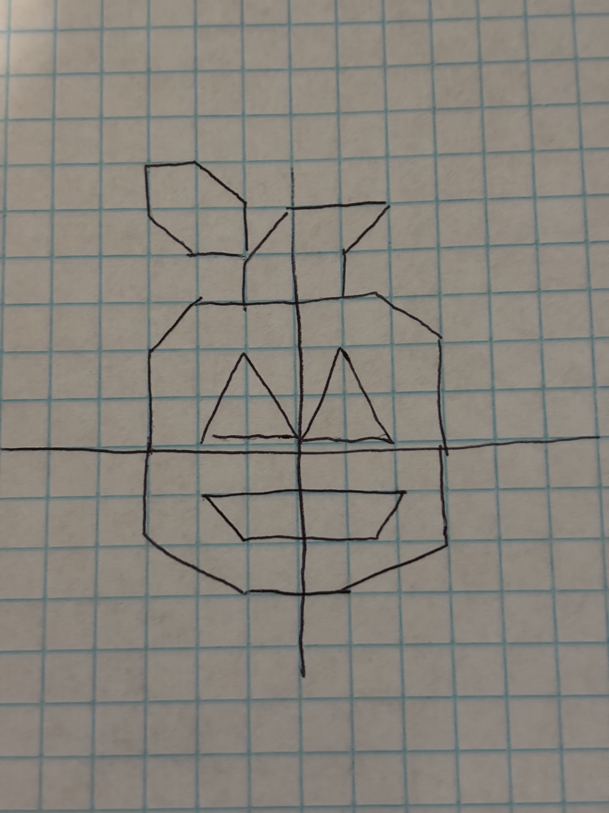

Please use a browser that supports "canvas"
Clear Canvas
Drawing Mode: (Awesomeness point: cursor will preview color, shape, and size dynamically on the canvas)
Square
Triangle
Circle
Shape Color:
Red
Green
Blue
Shape Size
(Circles) Segment Count

Click on this to display image